SERVANT LIST
This is a list of servants in the NA version (not kept up to date, quality not guaranteed) with brief data.
All icons from https://kazemai.github.io/fgo-vz/servant.html.
Extra Traits listed are only those that are impacted by skills/noble phantasms and are not unique to a specific servant. All trait data from FGO Wikia. This data may be incorrect or I may have incorrectly transcribed the data.
Table of Contents
Release Servants
| ID | Icon | Class | Rarity | Name | Deck | NP | Basic Traits | Extra Traits |
|---|---|---|---|---|---|---|---|---|
| 003 | 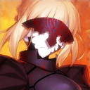 |  | 4 | Altria Pendragon (Alter) アルトリア・ペンドラゴン〔オルタ〕 |
Q A A B B | B |
Female - Earth - Lawful - Evil | Altria - Dragon - Humanoid - Saberface Weak to Enuma Elish |
| 004 |  |
| 4 | Altria Pendragon (Lily) アルトリア・ペンドラゴン〔リリィ〕 |
Q A A B B | B |
Female - Earth - Lawful - Good | Altria - Dragon - Humanoid - King - Riding - Saberface Weak to Enuma Elish |
| 005 |  |
| 4 | Nero Claudius ネロ・クラウディウス |
Q A A B B | A |
Female - Man - Chaotic - Good | Humanoid - King - Riding - Roman - Saberface Weak to Enuma Elish |
| 006 | 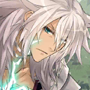 | | 4 | Siegfried ジークフリート |
Q A A B B | B |
Male - Earth - Chaotic - Good | Brynhild's Beloved Dragon - Humanoid - King - Riding Weak to Enuma Elish |
| 007 |  |
 | 3 | Gaius Julius Caesar ガイウス・ユリウス・カエサル |
Q Q A B B | Q |
Male - Man - True Neutral | Brynhild's Beloved Divine - Humanoid - King - Riding - Roman Weak to Enuma Elish |
| 008 | | 5 | Altera アルテラ |
Q A A B B | B |
Female - Man - Chaotic - Good | Divine - Humanoid - King - Riding Weak to Enuma Elish | |
| 009 |  |
| 3 | Gilles de Rais ジル・ド・レェ |
Q A A B B | A |
Female - Man - Chaotic - Good | Brynhild's Beloved Humanoid - Riding Weak to Enuma Elish |
| 010 | 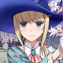 | | 4 | Chevalier d'Eon シュヴァリエ・デオン |
Q A A B B | A |
Unknown - Man - True Neutral | Humanoid - Riding Weak to Enuma Elish |
| 011 |  | 4 | Emiya エミヤ |
Q A A A B | B |
Male - Man - True Neutral | Brynhild's Beloved Humanoid Weak to Enuma Elish | |
| 012 | | 5 | Gilgamesh ギルガメッシュ |
Q A A B B | B |
Male - Sky - Chaotic - Good | Divine - Humanoid - King Weak to Enuma Elish | |
| 013 | 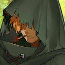 |  | 3 | Robin Hood ロビンフッド |
Q Q A A B | A |
Male - Man - Neutral - Good | Brynhild's Beloved Humanoid Weak to Enuma Elish |
| 014 | | 4 | Atalante アタランテ |
Q Q A A B | Q |
Female - Earth - Neutral - Evil | Humanoid Weak to Enuma Elish | |
| 015 | | 3 | Euryale エウリュアレ |
Q Q A A B | A |
Female - Sky - Chaotic - Good | Divine - Humanoid Weak to Enuma Elish | |
| 016 | 1 | Arash アーラシュ |
Q A A B B | B |
Male - Earth - Chaotic - Neutral | Brynhild's Beloved Humanoid Weak to Enuma Elish | ||
| 017 | 3 | Cú Chulainn クー・フーリン |
Q Q A B B | Q |
Male - Sky - Lawful - Neutral | Brynhild's Beloved Divine - Humanoid Weak to Enuma Elish | ||
| 018 |  | 4 | Elizabeth Bathory エリザベート・バートリー |
Q Q A B B | B |
Female - Man - Chaotic - Evil | Dragon - Humanoid Weak to Enuma Elish | |
| 019 | 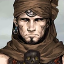 |  | 2 | Musashibou Benkei ムサシボウベンケイ 武蔵坊弁慶 |
Q Q A A B | A |
Male - Man - Chaotic - Good | Brynhild's Beloved Humanoid Weak to Enuma Elish |
| 020 | 3 | Cú Chulainn (Prototype) クー・フーリン〔プロトタイプ〕 |
Q Q A B B | Q |
Male - Sky - Lawful - Neutral | Divine - Humanoid Weak to Enuma Elish | ||
| 021 | 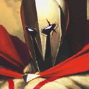 | | 2 | Leonidas I レオニダス一世 |
Q Q A B B | B |
Male - Man - Lawful - Neutral | Humanoid - King Weak to Enuma Elish |
| 022 | 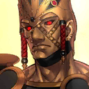 | 3 | Romulus ロムルス |
Q Q A B B | B |
Male - Star - Chaotic - Neutral | Humanoid - King - Roman | |
| 023 | 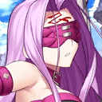 | 3 | Medusa メドゥーサ |
Q Q A A B | Q |
Female - Earth - Chaotic - Good | Divine - Humanoid - Riding Weak to Enuma Elish | |
| 024 | 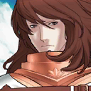 |  | 2 | Georgios ゲオルギウス |
Q Q A A B | A |
Male - Man - Lawful - Good | Brynhild's Beloved Humanoid - Riding Weak to Enuma Elish |
| 025 | 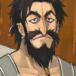 | | 2 | Edward Teach エドワード・ティーチ |
Q A A B B | B |
Male - Man - Chaotic - Evil | Humanoid Weak to Enuma Elish |
| 026 | 3 | Boudica ブーディカ |
Q Q A A B | A |
Female - Man - Neutral - Good | Humanoid - King - Riding Weak to Enuma Elish | ||
| 027 | 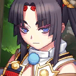 | 3 | Ushiwakamaru ウシワカマル 牛若丸 |
Q Q A A B | Q |
Female - Man - Chaotic - Neutral | Brynhild's Beloved Humanoid - Riding Weak to Enuma Elish | |
| 028 | 3 | Alexander アレキサンダー |
Q Q A A B | Q |
Male - Man - Neutral - Good | Divine - Greek Mythology Males - Humanoid - King - Riding Weak to Enuma Elish | ||
| 029 | 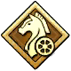 | 4 | Marie Antoinette マリー・アントワネット |
Q Q A A B | Q |
Female - Man - Lawful - Good | Humanoid - Riding Weak to Enuma Elish | |
| 030 |  |
4 | Martha マルタ |
Q A A A B | B |
Female - Man - Lawful - Good | Divine - Humanoid - Riding Weak to Enuma Elish | |
| 031 | 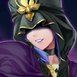 | 3 | Medea メディア |
Q A A A B | A |
Female - Earth - Neutral - Evil | Humanoid Weak to Enuma Elish | |
| 032 | 3 | Gilles de Rais ジル・ド・レェ |
Q A A A B | B |
Male - Man - Chaotic - Evil | Humanoid Weak to Enuma Elish | ||
| 033 |  | 2 | Hans Christian Andersen ハンス・クリスチャン・アンデルセン |
Q A A A B | A |
Male - Man - Lawful - Neutral | Humanoid Weak to Enuma Elish | |
| 034 | | 2 | William Shakespeare ウィリアム・シェイクスピア |
Q A A A B | B |
Male - Man - True Neutral | Humanoid Weak to Enuma Elish | |
| 035 | 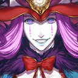 | 3 | Mephistopheles メフィストフェレス |
Q A A A B | B |
Male - Earth - Chaotic - Evil | Humanoid Weak to Enuma Elish | |
| 036 | 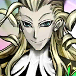 | | 1 | Wolfgang Amadeus Mozart ヴォルフガング・アマデウス・モーツァルト |
Q A A A B | A |
Male - Star - Neutral - Good | Brynhild's Beloved Humanoid |
| 037 | 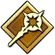 | 5 | Zhuge Liang (Lord El-Melloi II) ショカツコウメイ〔ロードエルメロイニセイ〕 諸葛孔明〔エルメロイⅡ世〕 |
Q A A A B | A |
Male - Man - Neutral - Good | Brynhild's Beloved Humanoid Weak to Enuma Elish | |
| 038 | 3 | Cú Chulainn クー・フーリン |
Q A A A B | B |
Male - Sky - Lawful - Neutral | Brynhild's Beloved Divine - Humanoid Weak to Enuma Elish | ||
| 039 | 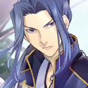 | 1 | Sasaki Kojiro 佐々木小次郎 |
Q Q Q A B | Q |
Male - Man - Neutral - Evil | Humanoid Weak to Enuma Elish | |
| 040 | 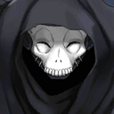 | 2 | Cursed Arm Hassan 呪腕のハサン |
Q Q Q A B | Q |
Male - Man - Lawful - Evil | Humanoid Weak to Enuma Elish | |
| 041 |  | 4 | Stheno ステンノ |
Q Q Q A B | B |
Female - Sky - Chaotic - Good | Divine - Humanoid Weak to Enuma Elish | |
| 042 | 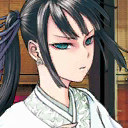 | 3 | Jing Ke ケイカ 荊軻 |
Q Q Q A B | Q |
Female - Man - Chaotic - Good | Humanoid Weak to Enuma Elish | |
| 043 | 2 | Charles-Henri Sanson シャルル＝アンリ・サンソン |
Q Q Q A B | B |
Male - Man - Lawful - Evil | Humanoid Weak to Enuma Elish | ||
| 044 | 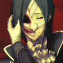 | 2 | Phantom of the Opera ファントム・オブ・ジ・オペラ |
Q Q Q A B | A |
Male - Earth - Chaotic - Evil | Humanoid Weak to Enuma Elish | |
| 045 |  |
1 | Mata Hari マタ・ハリ |
Q Q Q A B | A |
Female - Man - Chaotic - Neutral | Humanoid Weak to Enuma Elish | |
| 046 | 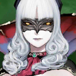 | | 4 | Carmilla カーミラ |
Q Q Q A B | B |
Female - Earth - Chaotic - Evil | Humanoid Weak to Enuma Elish |
| 047 | 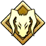 | 4 | Heracles ヘラクレス |
Q A B B B | B |
Male - Sky - Chaotic - Insane | Divine - Greek Mythology Males - Humanoid Weak to Enuma Elish | |
| 048 |  |
4 | Lancelot ランスロット |
Q A B B B | Q |
Male - Earth - Lawful - Insane | Humanoid Weak to Enuma Elish | |
| 049 |  |
3 | Lü Bu Fengxian リョフホウセン 呂布奉先 |
Q A B B B | B |
Male - Man - Chaotic - Evil | Humanoid Weak to Enuma Elish | |
| 050 | 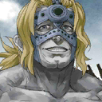 |  | 1 | Spartacus スパルタクス |
Q A B B B | B |
Male - Man - True Neutral | Humanoid - Roman Weak to Enuma Elish |
| 051 | 5 | Sakata Kintoki サカタキントキ 坂田金時 |
Q A B B B | B |
Male - Man - Lawful - Good | Brynhild's Beloved Divine - Humanoid Weak to Enuma Elish | ||
| 052 | 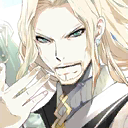 | 5 | Vlad III ヴラド三世 |
Q A A B B | A |
Male - Earth - Chaotic - Evil | Brynhild's Beloved Humanoid - King Weak to Enuma Elish | |
| 053 | 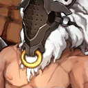 | | 1 | Asterios アステリオス |
Q A B B B | A |
Male - Earth - Chaotic - Evil | Greek Mythology Males - Humanoid Weak to Enuma Elish |
| 054 |  |
| 2 | Caligula カリギュラ |
Q A B B B | A |
Male - Man - Chaotic - Evil | Humanoid - King - Roman Weak to Enuma Elish |
| 055 | 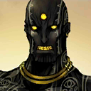 | 3 | Darius III ダレイオス三世 |
Q A B B B | B |
Male - Man - Lawful - Neutral | Humanoid - King Weak to Enuma Elish | |
| 056 | 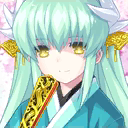 | 3 | Kiyohime キヨヒメ 清姬 |
Q A B B B | B |
Female - Earth - Chaotic - Evil | Dragon - Humanoid Weak to Enuma Elish | |
| 057 | | 2 | Eric Bloodaxe エイリーク・ブラッドアクス |
Q A B B B | B |
Male - Man - Chaotic - Neutral | Humanoid - King Weak to Enuma Elish | |
| 058 | 4 | Tamamo Cat タマモキャット |
Q A B B B | Q |
Female - Earth - Chaotic - Good | Beast - Humanoid Weak to Enuma Elish | ||
| 059 | 5 | Jeanne d'Arc ジャンヌ・ダルク |
Q A A A B | A |
Female - Star - Lawful - Good | Humanoid - Saberface Weak to Enuma Elish |
Grand Order
Epic of Remnant
Cosmos in the Lostbelt
Template
| ID | Icon | Class | Rarity | Name | Deck | NP | Basic Traits | Extra Traits |
|---|---|---|---|---|---|---|---|---|
| 000 |  | 3 | Template | Q A A B B | B |
Gender - ESS - Align - Align |